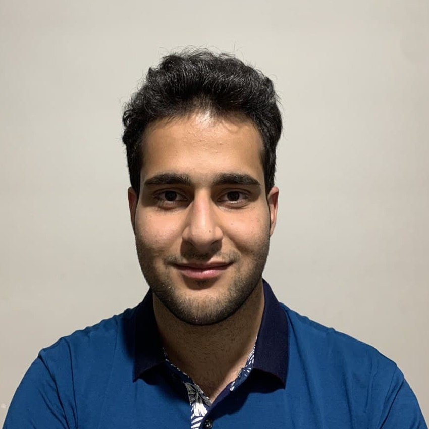

I am a senior computer engineering B.Sc. student at the College of Electrical and Computer Engineering at the University of Tehran, Iran.
I am interested in Computer Graphics & Vision, Federated Learning, Optimization, and Networked Systems. In general, it is interesting for me to employ a combination of mathematics-based and learning-based approaches to develop and optimize various systems. Hence they would be able to work in a real-world situation in real-time.
I am a member of Smart Networks Lab (SNL), where I work on my thesis under the supervision of Prof. Hamed Kebriaei & Prof. Seyed Pooya Shariatpanahi about improving Federated Learning systems.
I have worked in Multimedia & Signal Processing (MSL) under the supervision of Prof. Farokh Marvasti for about one year, where I worked on Implicit Neural Networks to be able to work in real-time applications.
In the summer of 2020, I did my internship under supervision of Prof. Behnam Bahrak working on detection and classification networks such as R-CNNs, MobileNets, and YOLOs to employ them in a sorting system working in real-time.
CV / Google Scholar / GitHub / LinkedIn
